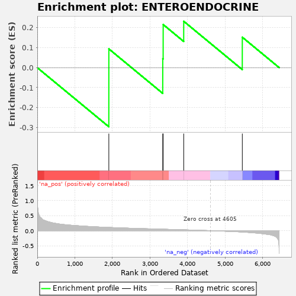
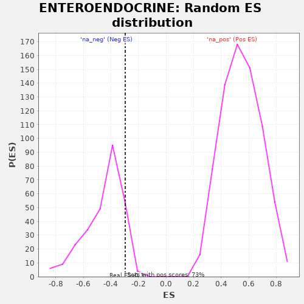

| | | Dataset | al10_v_al5 |
| Phenotype | NoPhenotypeAvailable |
| Upregulated in class | na_neg |
| GeneSet | ENTEROENDOCRINE |
| Enrichment Score (ES) | -0.29597387 |
| Normalized Enrichment Score (NES) | -0.65502334 |
| Nominal p-value | 0.9306569 |
| FDR q-value | 0.59503907 |
| FWER p-Value | 0.578 |
Table: GSEA Results Summary

Fig 1: Enrichment plot: ENTEROENDOCRINE
Profile of the Running ES Score & Positions of GeneSet Members on the Rank Ordered List
| PROBE | GENE SYMBOL | GENE_TITLE | RANK IN GENE LIST | RANK METRIC SCORE | RUNNING ES | CORE ENRICHMENT | | 1 | Fabp5 | | | 1904 | 0.107 | 0.0940 | Yes |
| 2 | Fam183b | | | 3339 | 0.048 | 0.0449 | Yes |
| 3 | Cnot6l | | | 3350 | 0.047 | 0.2160 | Yes |
| 4 | Tox3 | | | 3897 | 0.028 | 0.2323 | Yes |
| 5 | Maged1 | | | 5456 | -0.045 | 0.1525 | No |
Table: GSEA details [plain text format]

Fig 2: ENTEROENDOCRINE: Random ES distribution
Gene set null distribution of ES for ENTEROENDOCRINE